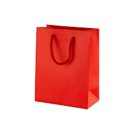

Farhana's CSS practice : Step 2
CSS Table
CSS Table Properties border- Sets all the border properties in one
declaration
border-collapse Specifies whether or not table borders should be
collapsed
border-spacing Specifies the distance between the borders of adjacent
cells
| Firstname |
Lastname |
| Farhana |
Afrin |
| Mahfuz |
Ali |
caption-side Specifies the placement of a table caption
empty-cells Specifies whether or not to display borders and background on
empty cells in a table
| Firstname |
Lastname |
| Farhana |
|
| Mahfuz |
Ali |
table-layout Sets the layout algorithm to be used for a table
CSS Display
The display property is the most important CSS property for controlling
layout.
display:(none/block/inline/inline-block) Specifies how an element should
be displayed visibility:(visible/hidden) Specifies whether or not an
element should be visible
Changing an inline element to a block element, or vice versa, can be
useful for making the page look a specific way, example of inline element
are
CSS Position
Position:static/relative/fixed/absolute/sticky; used to specify the type
of positioning method used for an element.
This div element has position: absolute; left:350px means 350px away
from left border.
All css Positioning Properties are:
- bottom
- clip
- left
- position
- right
- top
- z-index
CSS Max-width
Using max-width instead of width, in this situation, will improve the
browser's handling of small windows. This is important when making a site
usable on small devices
CSS Overflow
The overflow property specifies what should happen if content overflows an
element's box.
overflow/overflow-x/overflow-y:
visible|hidden|scroll|auto|initial|inherit;
CSS Float, clear, clearfix

float
The float property can have one of the following values:
left - The element floats to the left of its container
right - The element floats to the right of its container
none - The element does not float (will be displayed just where it occurs
in the text). This is default
inherit - The element inherits the float value of its parent
The clear Property
The clear property can have one of the following values:none/left/right/both/inherit;
The most common way to use the clear property is after you have used a float property on an element.
When clearing floats, you should match the clear to the float: If an element is floated to the left, then you should clear to the left.
What is box-sizing?
While createing floating boxes side by side when you add something that enlarges the width of each box (e.g. padding or borders), the box will break. The box-sizing property allows us to include the padding and border in the box's total width (and height), making sure that the padding stays inside of the box and that it does not break.
The clearfix Hack
If an element is taller than the element containing it, and it is floated, it will "overflow" outside of its container:
The new, modern clearfix hack however, is safer to use, and the following code is used for most webpages:
.clearfix::after {
content: "";
clear: both;
display: table;
}